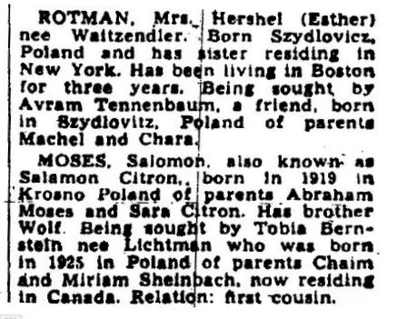
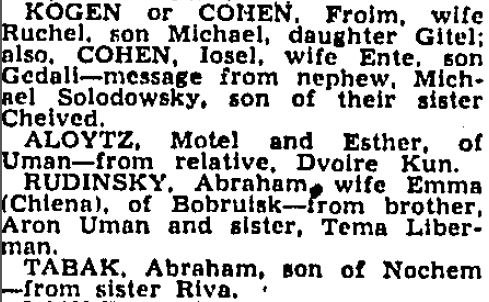

|
• Names • Complete Data • To View Sources • Acknowledgements • Search the Database |
The Boston Jewish Advocate “Seeking Kin” Database is a database of names and other information extracted from 5,000 “seeking kin” advertisements published in the Boston Jewish Advocate between 1916 and 1990, compiled by Roberta Jaffer and volunteers from the Jewish Genealogical Society of Greater Boston.
While some advertisements were submitted by individuals, most were written by agencies attempting to reunite families and friends separated involuntarily and unaware of each other’s whereabouts. There was no consistency to the format of the ads nor the type of information given. Often the ads were written from handwritten letters which first needed to be translated. More than 5,000 people were sought in these advertisements. While many were thought to live in the Boston area, the individuals sought could have been living in states other than Massachusetts. Often, no last place of residence was given. In many cases, contact had been lost twenty or thirty years earlier.

The spelling of any names or places may vary from expected. In some cases, alternative spellings were given in the published ads by the translator. Alternate surnames or given names were published in the ads when it was known that the person being sought had changed his name after arrival in the United States. All published alternate spelling or name changes have been included in this database. Any information added or corrected by the volunteers for the purpose of clarification has been included in square brackets “[ ]”. Every attempt was made to record the spelling of names and places as published, but many of the older advertisements had type print that was difficult to read.
This database is more than an index. All genealogical information has been extracted, and therefore, there should be little value in seeing the original advertisement. Some of the types of information an ad may contain are: date and place of birth, parents’ names, date of immigration, last known address, and names of other family members. However, all advertisements, even if they only contain the names of the person sought and the person seeking, have been included.
Often an ad for a particular person or family was duplicated in multiple issues of the Boston Jewish Advocate. Only one date of publication was included in this database. Usually duplicate ads were exactly the same. When not, every effort was made to incorporate any new information given.

Should you wish to see the original print advertisement, a digital version is available at the American Jewish Historical Society, New England Archives, 99-101 Newbury Street, Boston, MA. 02116.
Alternatively, the Jewish Advocate website has an archives page. Once an advertisement and issue date have been identified via this JewishGen database, the name and date can be searched again on the Advocate site and, for a fee, can be viewed on-line.
Microfilms of the back issues of the Jewish Advocate (110+ reels) are available at several libraries, including: Boston Public Library (Boston, MA): [AN2.M4J4]; Hebrew College Library (Newton, MA); Lamont Library, Harvard University (Cambridge, MA): [Film NC 497]; Goldfarb Library, Brandeis University (Waltham, MA): [AJHS Depository]; New York Public Library (New York, NY): [*ZAN-*P41]; Library of Congress (Washington, DC): [96/4713];
Thanks go to the following volunteers who helped make this database possible: Jenny Brown, Larry Englisher, Elizabeth Handler, Marcia Hicks, Suzanne Hoffman, Judith Izenberg, Mark Khesin, Elaine Levine, Alana Lipkin, Sandy Meltzer, Deb Olken, Matthew Rosenberg, and Alan Roth. The project manager was Roberta Jaffer.
The Boston Jewish Advocate “Seeking Kin” Database can be searched via the JewishGen USA Database.